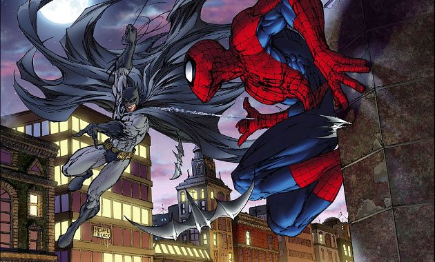
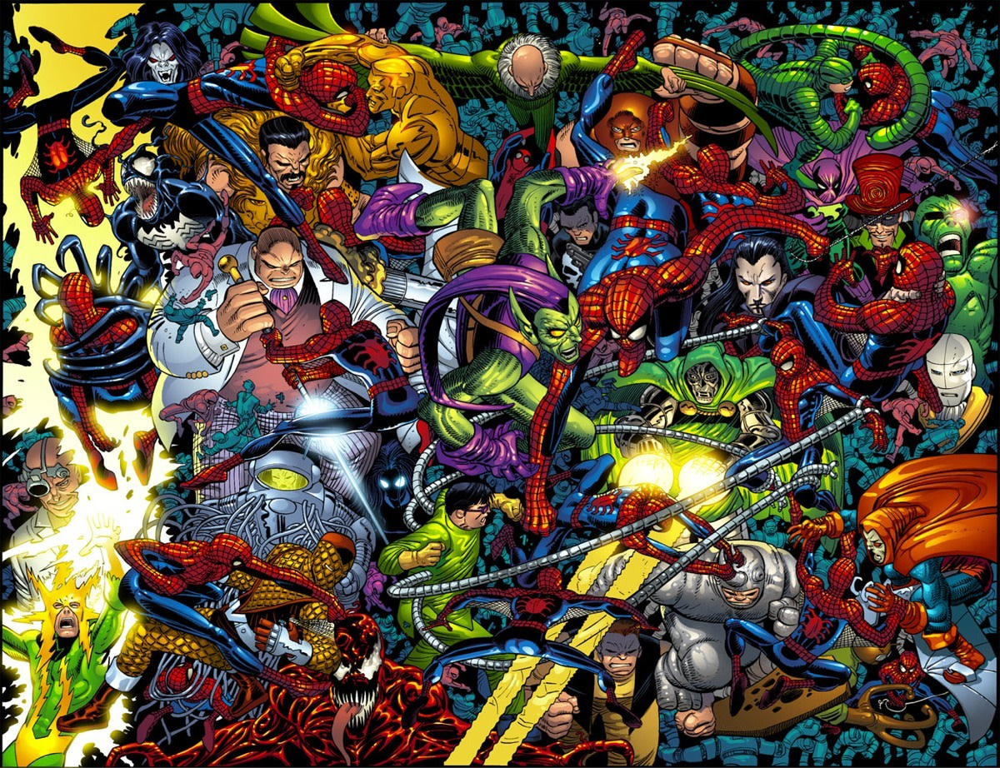
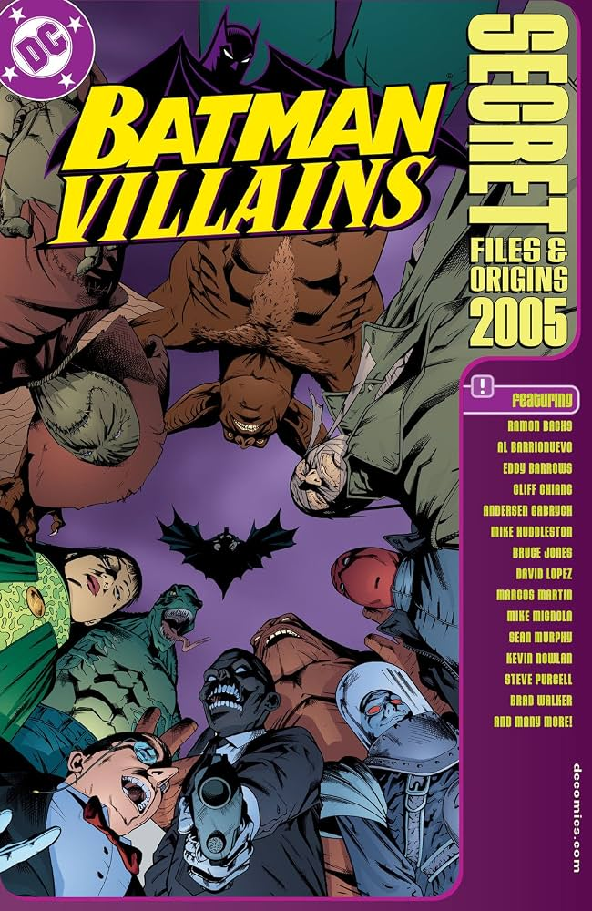

BATMAN vs SPIDER-MAN:
¿QUIÉN TIENE MÁS ENEMIGOS?

¿Quién atrae más problemas? Salvar el mundo parece tener un precio. Cuanto más famoso es un superhéroe, más enemigos aparecen dispuestos a derrotarlo. Durante décadas, Batman y Spider-Man han construido dos de las galerías de villanos más emblemáticas de la historia del cómic. Ambos cuentan con adversarios inolvidables, historias legendarias y enfrentamientos que definieron generaciones enteras de lectores.
Pero dejando de lado la popularidad por un momento, surge una pregunta interesante: ¿Cuál de los dos ha acumulado más enemigos a lo largo de su carrera? Para responderla revisamos información de comunidades especializadas como Marvel Database, DC Wiki y Comic Vine, además de registros históricos publicados por ambas editoriales.
📊 LOS NÚMEROS
| CATEGORÍA | BATMAN | SPIDER-MAN |
|---|---|---|
| DEBUT | 1939 | 1962 |
| AÑOS DE HISTORIA | 87 | 64 |
| VILLANOS CLÁSICOS | ~18 | ~16 |
| ENEMIGOS RECURRENTES | 170–210 | 250–300 |
| ANTAGONISTAS REGISTRADOS | Más de 800 | Más de 1,200 |
🏆 Ganador por cantidad: Spider-Man
A pesar de haber aparecido 23 años después que Batman, Peter Parker ha terminado enfrentándose a un número considerablemente mayor de enemigos.
🧬 ¿Por qué Spider-Man tiene tantos villanos?
La explicación está en la forma en que Marvel desarrolló al personaje. Durante las décadas de los setenta, ochenta y noventa, Spider-Man protagonizó varias series simultáneas como Amazing Spider-Man, Spectacular Spider-Man, Web of Spider-Man, Friendly Neighborhood Spider-Man y Peter Parker: Spider-Man.

Cada nueva colección necesitaba presentar amenazas inéditas, lo que provocó una enorme expansión de su galería de villanos. Además, muchos de ellos nacen a partir de experimentos científicos, mutaciones, accidentes tecnológicos o simbiontes extraterrestres, recursos narrativos que prácticamente no tienen límite.
🦇 Gotham: donde los villanos nunca desaparecen
Batman siguió un camino muy distinto. La mayoría de sus enemigos permanecen ligados a Gotham City, regresando una y otra vez desde lugares como el Asilo Arkham o Blackgate. En lugar de crear decenas de nuevos criminales cada año, DC optó por profundizar en personajes ya existentes.

El Joker, Two-Face, Scarecrow o Mr. Freeze no solo representan amenazas físicas: cada uno simboliza una obsesión, un trauma o un aspecto de la propia personalidad de Batman. Por eso muchos especialistas consideran que la galería del Caballero Oscuro es una de las mejor construidas de toda la ficción.
⚔️ Cara a cara
Aunque pertenecen a universos completamente distintos, ambos héroes cuentan con rivales que cumplen funciones similares dentro de sus historias:
🏆 ¿Quién tiene los villanos más famosos?
Aquí la respuesta cambia. Spider-Man puede presumir una enorme cantidad de enemigos, pero Batman posee posiblemente la colección de villanos más influyente de la cultura popular. Nombres como Joker, Harley Quinn, Bane, Two-Face, Penguin o Poison Ivy han trascendido los cómics para protagonizar películas y videojuegos de éxito mundial.
🤓 Dato curioso
Batman conserva varios villanos creados durante los años cuarenta que prácticamente desaparecieron del canon moderno. Personajes como The Penny Plunderer, The Eraser o Doctor Death forman parte de la enorme historia del Caballero Oscuro, aunque hoy rara vez aparecen. Spider-Man, en cambio, continúa incorporando antagonistas de manera constante, por lo que su lista sigue creciendo año tras año.
🎭 El veredicto
Si hablamos únicamente de números, Spider-Man gana. Su universo ha generado una cantidad impresionante de enemigos durante más de seis décadas. Sin embargo, si el criterio es la calidad, la influencia cultural o el impacto narrativo, Batman sigue siendo un referente difícil de superar.
¿Con cuál te quedas?
🦇 Batman y los criminales de Gotham
o
🕷️ Spider-Man y las amenazas de Marvel